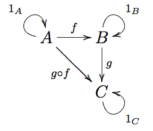

Monads in [My Py]thon
Acknowledgments
This talk is inspired and based on the following conferences:
- Monads, in my Python? by Xuanyi Chew
- Scala Monads: Declutter Your Code With Monadic Design by Dan Rosen
- Category Theory, The essence of interface-based design by Erik Meijer
- Type-checked Python in the real world by Carl Meyer
- Learning to Love Type Systems by Lauren Tan
- New Functional Constructs in Scala 3 by Martin Odersky
About MyPy
The python-enhancement-proposal-484 (PEP 484) by Guido van Rossum and Jukka Lehtosalo introduced the concept of type hints inspired on function annotations (PEP 3107). This type-hints are completely ignored at runtime but can be used with an optional static type checker. MyPy is the most popular type checker for python, lead by Guido van Rossum at Dropbox.
Why types
“A type system is a tractable syntactic method for proving the absence of certain program behaviors by classifying phrases according to the kinds of values they compute.”
(Pierce and Benjamin 2002)
“A type system is a way to add constraints to your code. The type system is there to help you enforce logic that’s consistent within those constraints.”
(Tan 2018)
Constraints are desirable because they limit the number of bugs in the program. We can use a strong DSL (domain specific language) to represent the business logic of our application and let the type checker verify the consistency.
In the Pragmatic types blogpost, the author explains the difference between using a type system for type-checking the code vs using unit-tests. Consider the following illustration:
We achieve type-safety in an application with (1) a robust type system & checker, and (2) by following the functional programming principles.
Functional programming started as a practical implementation of the following mathematical theories:
- Proof Theory: logic and mathematical proofs.
- Category Theory: algebra, composition and abstractions.
- Type Theory: programs and the idea of prepositions as types.
Curry-Howard-Lambek correspondence shows that these three theories are equivalent among each others.
Consider the following python function:
def addition(x: int, y: int) -> int: # proposition
return x + y # proof
The type signature serves as a proposition; given two integers x and y, there exists a function that returns another integer.
The implementation (body) of the function is the proof of such proposition. In this sense, types are propositions and programs are proofs. Therefore, we can think of type-checking as proof-checking.
Good type signatures and a DSLs facilitate the implementation of a particular program and let’s the developer rely on the type-systems to increase productivity.
Installation
Installation it’s straightforward (Ubuntu 18.04):
$ sudo apt install python3.7 && python3.7 -m pip install -U mypy
Now you can run the static type checker with your python programs:
$ python3.7 -m mypy app.py
To avoid warnings/errors related to external libraries, use:
$ python3.7 -m mypy --ignore-missing-imports app.py
About Monads
The most popular definition of a monad is probably the one phrased by James Iry in his blog-post A Brief, Incomplete, and Mostly Wrong History of Programming Languages.
“A monad is just a monoid in the category of endofunctors.”
Nonetheless, we can find the complete form of this definition in the book Categories for the working mathematician.
“A monad in $X$ is just a monoid in the category of endofunctors of $X$, with product $\times$ replaced by composition of endofunctors and unit set by the identity endofunctor.”
(Mac Lane 2013)
And a more formal definition in this same book:
“Formally, the definition of a monad is like that of a monoid $M$ in sets. The set $M$ of elements of the monoid is replaced by the endofunctor $T: X \to X$ , while the cartesian product $\times$ of two sets is replaced by the composite of two functors, the binary operation $\mu: M \times M \to M$ of multiplication by the trasformation $\mu: T^2 \to T$ and the unit (identity) element $\nu: 1 \to M$ by $\nu: I_x \to T$.”
(Mac Lane 2013)
$\mu: T^2 \to T$
With the help of this stackoverflow post, this wolfram post and the scala cats typelevel docs we can shine some light to this definition:
- A monoid is a representation of a set $S$ closed under an associative binary operation and has an identity element or unit.
A type A can form a semigroup if it has an associative binary operation combine that satisfies combine(x, combine(y, z)) = combine(combine(x, y), z) for any choice of x, y, and z in A.
trait Semigroup[A] {
def combine(x: A, y: A): A
}
object Semigroup {
def combine[A](x: A, y: A)(implicit sg: Semigroup[A]): A =
sg.combine(x, y)
}
We can create a simple example for Int:
implicit val integerAdditionSemigroup: Semigroup[Int] =
new Semigroup[Int] {
def combine(x: Int, y: Int): Int = x + y
}
Example:
Semigroup.combine[Int](1, 2)
// res0: Int = 3
Semigroup.combine[Int](1, Semigroup.combine[Int](2, 3))
// res1: Int = 6
To define a monoid we need to extend the Semigroup with an empty value such that the following holds true: combine(x, empty) = combine(empty, x) = x
trait Monoid[A] extends Semigroup[A] {
def empty: A
}
object Monoid {
def empty[A](implicit m: Monoid[A]): A = m.empty
def combine[A](x: A, y: A)(implicit m: Monoid[A]): A =
m.combine(x, y)
}
// Int monoid
implicit val integerAdditionMonoid: Monoid[Int] = new Monoid[Int] {
def empty: Int = 0
def combine(x: Int, y: Int): Int = x + y
}
We can verify the combine operation with our empty element:
Monoid.combine[Int](1, Monoid.empty[Int])
// res3: Int = 1
- A functor is a mathematical structure-preserving transformation between categories. And endofunctor is a functor from one category back to the same category.
trait Functor[F[_]] {
def map[A, B](fa: F[A])(f: A => B): F[B]
}
- A category is a collection of (1) objects, (2) morphisms or arrows for each pair of objects, and a (3) binary operation for composition between arrows. See more about categories.
According to Erik Meijer in this talk “Category Theory, The essence of interface-based design” we can use the following following equivalences as a practival guide:
Category= Programming LanguageObjects= TypesMorphism= functions, static methods, properties :f(a: A): Borf: BanA
(Meijer 2015)

Monads in Scala
The Scala language provides a rich set of functional programming constructs. Consider the following code-snipped shown at the conference “Scale by the Bay - 2018” by Martin Odersky to define an abstract monad in Scala:
trait Functor[F[_]] {
def map[A, B](this x: F[A])(f: A => B): F[B]
}
trait Monad[F[_]] extends Functor[F] {
def pure[A](x: A): F[A]
def flatMap[A, B](this x: F[A])(f: A => F[B]): F[B]
def map[A, B](this x: F[A])(f: A => B): F[B] =
x.flatMap(f `andThen` pure)
}
Now we can use extension methods (Scala 3) to create a particular implementation:
implicit object ListMonad extends Monad[List] {
def flatMap[A, B](this xs: List[A])(f: A => List[B]): List[B] =
xs.flatMap(f)
def pure[A](x: A): List[A] = List(x)
}
(Odersky 2018)
Monads in python
Without higher-kinded types. For now.
Consider the following python functions:
def div(num: int, den: int) -> int:
return num / den
def factorial(n: int) -> int:
if n < 0:
raise Exception("Factorial is defined over non-negative numbers")
return 1 if n == 0 else n * factorial(n-1)
If we would like to compose both functions we would likely have to implement several safe guards to avoid runtime erros and invalid inputs. What if we use python’s None naively instead of error-handling for the div function?
def div(num: int, den: int) -> int:
if den == 0:
return None
return num / den
We still have composability problems (see this diagram). Moreover, our types are incorrect!
- Q: Is there a way we can generalize this?
- A: Monads!
Let’s create an Option monad.
For simplicity, let’s use a higher-order function that allows us to compose two functions:
from typing import Callable, TypeVar
A = TypeVar('A')
B = TypeVar('B')
C = TypeVar('C')
def compose(this: Callable[[A], B], and_then: Callable[[B], C]) -> Callable[[A], C]:
return lambda x: and_then(this(x))
Now let’s define our option:
from abc import ABC, abstractmethod
from typing import Union, Generic, TypeVar, Callable
A = TypeVar("A", covariant=True)
B = TypeVar("B")
T = TypeVar("T")
class Option(Generic[A], ABC):
@abstractmethod
def __str__(self) -> str:
pass
@abstractmethod
def get(self, or_else: B) -> Union[A, B]:
pass
@abstractmethod
def flat_map(self, f: Callable[[A], 'Option[B]']) -> 'Option[B]':
pass
@staticmethod
def pure(x: T) -> 'Option[T]':
return Some(x)
def map(self, f: Callable[[A], B]) -> 'Option[B]':
return self.flat_map(compose(this=f, and_then=self.pure))
@abstractmethod
def foreach(self, f: Callable[[A], None]) -> None:
pass
@abstractmethod
def flatten(self) -> 'Option':
pass
An Option[A] can take Some[A] value or be Empty. We can define the Some type:
class Some(Option[A]):
def __init__(self, value: A) -> None:
self._value = value
def __str__(self) -> str:
return f"Some({self._value})"
def get(self, or_else: B) -> Union[A, B]:
return self._value
def flat_map(self, f: Callable[[A], Option[B]]) -> Option[B]:
return f(self._value)
def foreach(self, f: Callable[[A], None]) -> None:
f(self._value)
def flatten(self) -> Option:
if isinstance(self._value, Option):
return self._value.flatten()
return self
The Empty class is defined as:
class Empty(Option[A]):
def __init__(self) -> None:
pass
def __str__(self) -> str:
return "Empty"
def get(self, or_else: B) -> Union[A, B]:
if isinstance(or_else, Exception):
raise or_else
return or_else
def flat_map(self, f: Callable[[A], Option[B]]) -> Option[B]:
return Empty[B]()
def foreach(self, f: Callable[[A], None]) -> None:
return None
def flatten(self) -> Option:
return self
Now we can use our option type!
# Two options
opt_a: Option[int] = Some(2)
opt_b: Option[int] = Some(5)
# Sum a+b
opt_c = opt_a.flat_map(lambda a: opt_b.map(lambda b: a + b))
# Sum c+d
opt_d: Option[int] = Empty()
opt_e = opt_c.flat_map(lambda c: opt_d.map(lambda d: c + d))
# Print results
print(f"opt_c = {opt_c}\nopt_e = {opt_e}")
## opt_c = Some(7)
## opt_e = Empty
Let’s define some decorators:
from typing import Callable, TypeVar
T = TypeVar("T")
A = TypeVar("A")
Decorate a function to output Option type:
def to_option(fn: Callable[..., T]) -> Callable[..., Option[T]]:
def inner(*args, **kwargs) -> Option[T]:
try:
value = fn(*args, **kwargs)
if value is None:
return Empty[T]()
return Some(value)
except Exception:
return Empty[T]()
return inner
Decorate a function facilitate Option composability;
def composable(fn: Callable[..., Option[T]]) -> Callable[..., Option[T]]:
def inner(*args, **kwargs) -> Option[T]:
new_args = []
new_kwargs = {}
for arg in args:
new_arg = arg if isinstance(arg, Option) else Some(arg)
new_arg.foreach(lambda value: new_args.append(value))
for k in kwargs:
v = kwargs[k]
new_val = v if isinstance(v, Option) else Some(v)
new_val.foreach(lambda value: new_kwargs.update({k: value}))
return fn(*new_args, **new_kwargs)
return inner
Now we are ready to define our functions:
@composable
@to_option
def div(num: int, den: int) -> int:
return num / den
@composable
@to_option
def factorial(n: int) -> int:
if n < 0:
raise Exception("Factorial is defined over non-negative numbers")
return 1 if n == 0 else n * factorial(n-1)
Our monadic values allows us to easily compose between Objects (see this).
a = 5
b = 0
res = div(a, b)
print(f"div(a,b) = {res}")
## div(a,b) = Empty
a = 15
b = 0
c = 3
d = 5
res_1 = div(d, div(a, b))
res_2 = div(d, div(a, c))
print(f"div(d, div(a, b) = {res_1}\ndiv(d, div(a, c)) = {res_2}")
## div(d, div(a, b) = Empty
## div(d, div(a, c)) = Some(1.0)
a = 10
b = -2
res_1 = div(a, b)
res_2 = factorial(res_1)
print(f"div(a, b) = {res_1}\nfactorial(res_1)= {res_2}")
## div(a, b) = Some(-5.0)
## factorial(res_1)= Empty
Great!
Example
add a more complex example.
References
Mac Lane, Saunders. 2013. Categories for the Working Mathematician. Vol. 5. Springer Science & Business Media.
Meijer, Erik. 2015. “Category Theory, the Essence of Interface-Based Design.” Youtube - FooCafe. https://www.youtube.com/watch?v=JMP6gI5mLHc.
Odersky, Martin. 2018. “New Functional Constructs in Scala 3.” Youtube - FunctionalTV. https://www.youtube.com/watch?v=6P06YHc8faw.
Pierce, Benjamin C, and C Benjamin. 2002. Types and Programming Languages. MIT press.
Tan, Lauren. 2018. “Learning to Love Type Systems.” Youtube - DotJs. https://www.youtube.com/watch?v=cj07Fwzamy0.